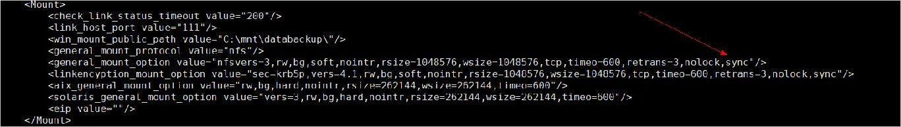

在Linux中，在挂载文件系统时可以选择异步(async)或同步(sync)模式。异步模式的优点是性能较高，因为写入内存比写入磁盘快；同步模式的优点是数据安全性高，系统崩溃或断电时数据不易丢失。请根据需求进行设置。
例如：
vim /opt/DataBackup/ProtectClient/ProtectClient-E/conf/agent_cfg.xml
修改参数general_mount_option中的挂载文件系统的方式为async（异步）。
